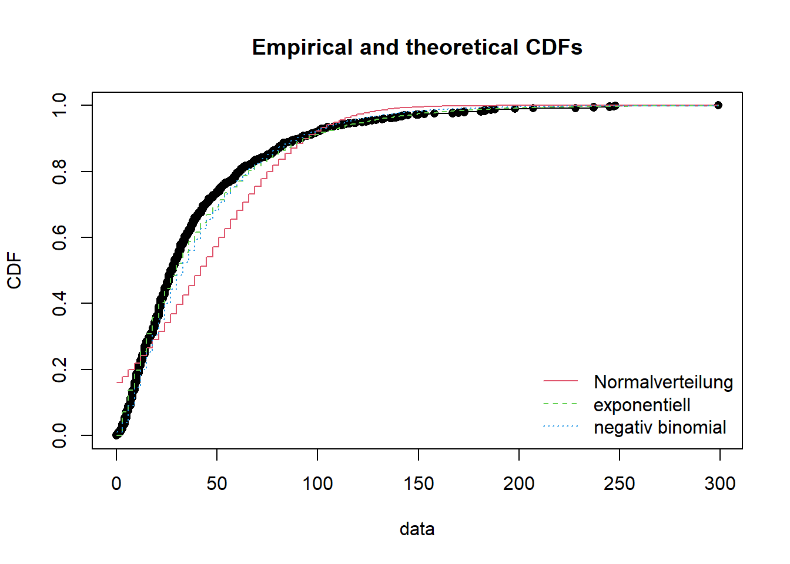
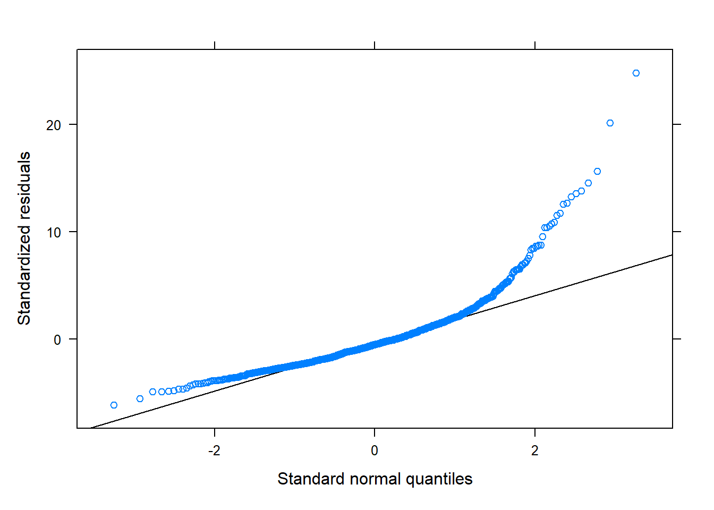
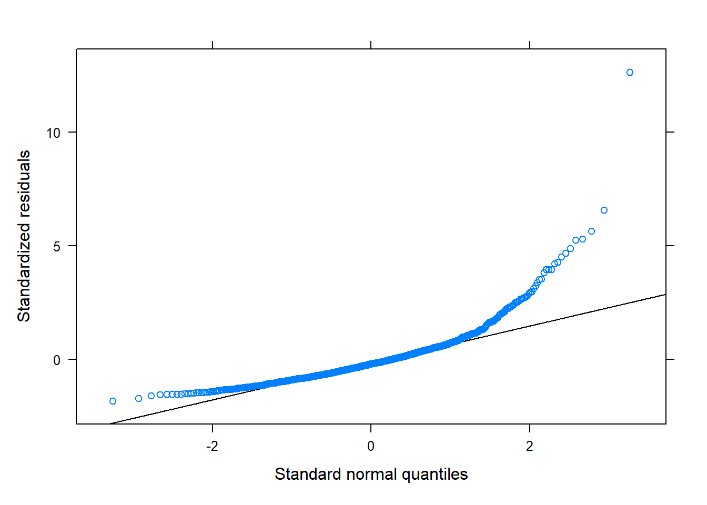
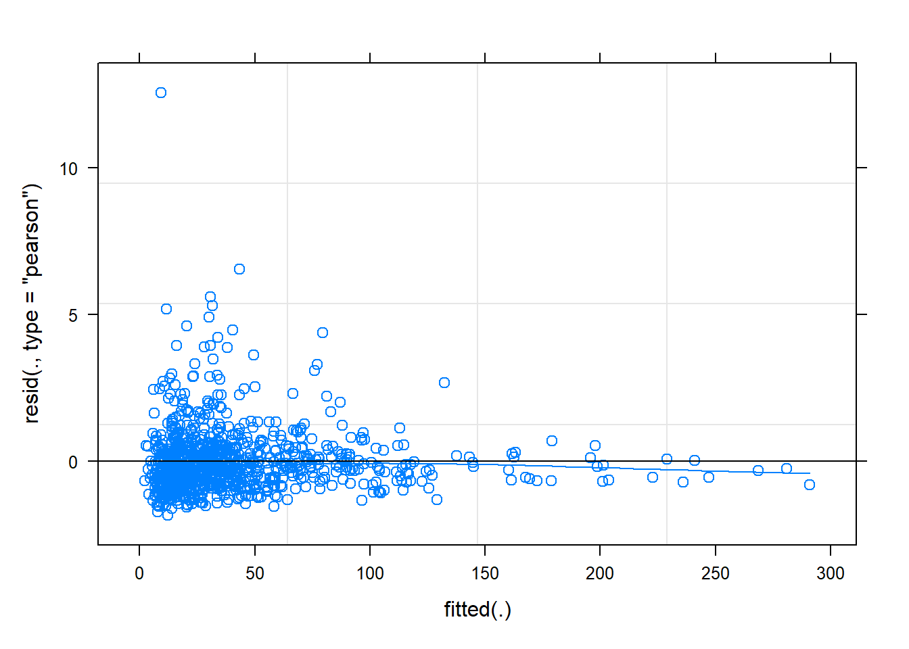
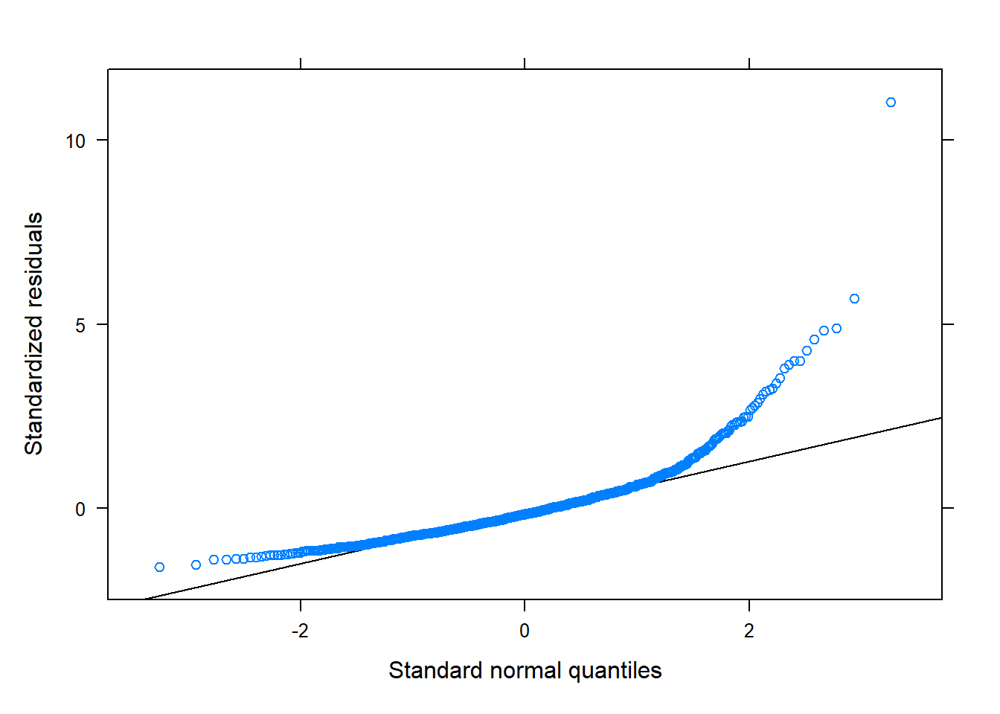
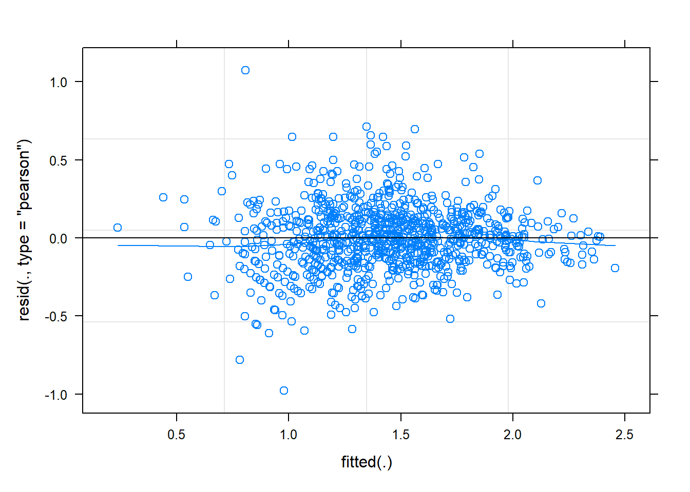
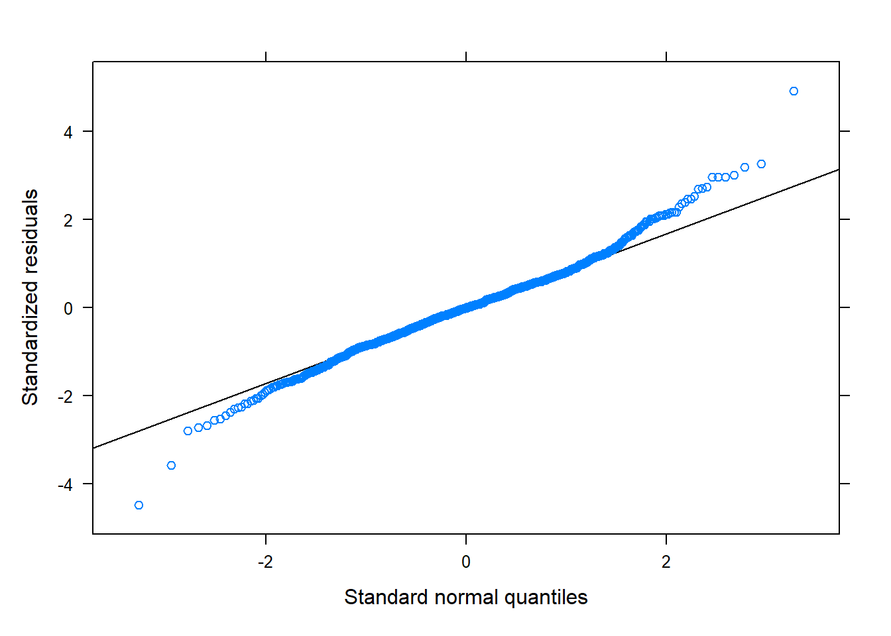

# 4.1 Einflussfaktoren Besucherzahl ##### Erstelle ein df indem die taeglichen Zaehldaten und Meteodaten vereint sindumwelt <-inner_join(depo_d, meteo, by =c("Datum"="time"))# Das zusammenfuehren folgt evtl. in NA-Werten bei gewissen Tagensum(is.na(umwelt))
# nochmals einige Convinience Variablenumwelt <- umwelt%>%mutate(Ferien =if_else( Datum >= Fruehlingsferien_2019_start & Datum <= Fruehlingsferien_2019_ende | Datum >= Sommerferien_2019_start & Datum <= Sommerferien_2019_ende | Datum >= Herbstferien_2019_start & Datum <= Herbstferien_2019_ende | Datum >= Winterferien_2019_start & Datum <= Winterferien_2019_ende | Datum >= Fruehlingsferien_2020_start & Datum <= Fruehlingsferien_2020_ende | Datum >= Sommerferien_2020_start & Datum <= Sommerferien_2020_ende | Datum >= Herbstferien_2020_start & Datum <= Herbstferien_2020_ende | Datum >= Winterferien_2020_start & Datum <= Winterferien_2020_ende | Datum >= Fruehlingsferien_2021_start & Datum <= Fruehlingsferien_2021_ende | Datum >= Sommerferien_2021_start & Datum <=max(depo$Datum),"1", "0"))%>%mutate(Ferien =factor(Ferien))# Faktor und integer# Im GLMM wird die Kalenderwoche und das Jahr als random factor definiert. Dazu muss sie als# Faktor vorliegen.umwelt <- umwelt %>%mutate(Jahr =as.factor(Jahr)) %>%mutate(KW =as.factor(KW))# Unser Modell kann nur mit ganzen Zahlen umgehen. Zum Glueck habe wir die Zaehldaten# bereits gerundet.# pruefe str des dfsummary(umwelt)str(umwelt)sum(is.na(umwelt))# unser Datensatz muss ein df sein, damit scale funktioniertumwelt <-as.data.frame(umwelt)# Variablen skalieren# Skalieren der Variablen, damit ihr Einfluss vergleichbar wird # (Problem verschiedene Skalen der Variablen (bspw. Temperatur in Grad Celsius, # Niederschlag in Millimeter und Sonnenscheindauer in Minuten)umwelt <- umwelt %>%mutate(tre200jx_scaled =scale(tre200jx), rre150j0_scaled =scale(rre150j0), sremaxdv_scaled =scale(sremaxdv))
Aufgabe 3: Korrelationen und Variablenselektion
# 4.2 Variablenselektion ##### Korrelierende Variablen koennen das Modelergebnis verfaelschen. Daher muss vor der# Modelldefinition auf Korrelation getestet werden.# Erklaerende Variablen definieren# Hier wird die Korrelation zwischen den (nummerischen) erklaerenden Variablen berechnetcor <-cor(umwelt[,16:(ncol(umwelt))]) # in den [] waehle ich die skalierten Spalten.# Mit dem folgenden Code kann eine simple Korrelationsmatrix aufgebaut werden# hier kann auch die Schwelle für die Korrelation gesetzt werden, # 0.7 ist liberal / 0.5 konservativ# https://researchbasics.education.uconn.edu/r_critical_value_table/cor[abs(cor)<0.7] <-0#Setzt alle Werte kleiner 0.7 auf 0 (diese sind dann ok, alles groesser ist problematisch!)cor# Korrelationsmatrix erstellen# Zur Visualisierung kann ein einfacher Plot erstellt werden:chart.Correlation(umwelt[,16:(ncol(umwelt))], histogram=TRUE, pch=19)
# # Automatisierte Variablenselektion # # fuehre die dredge-Funktion und ein Modelaveraging durch# # Hier wird die Formel für die dredge-Funktion vorbereitet# f <- Total ~ Wochentag + Ferien + Phase +# tre200jx_scaled + rre150j0_scaled + sremaxdv_scaled# # Jetzt kommt der Random-Factor hinzu und es wird eine Formel daraus gemacht# f_dredge <- paste(c(f, "+ (1|KW)", "+ (1|Jahr)"), collapse = " ") %>% # as.formula()# # Das Modell mit dieser Formel ausführen# m <- glmer(f_dredge, data = umwelt, family = poisson, na.action = "na.fail")# # Das Modell in die dredge-Funktion einfügen (siehe auch ?dredge)# all_m <- dredge(m)# # suche das beste Modell# print(all_m)# # Importance values der Variablen # # hier wird die wichtigkeit der Variablen in den verschiedenen Modellen abgelesen# MuMIn::importance(all_m) # # # Schliesslich wird ein Modelaverage durchgeführt # # Schwellenwert für das delta-AIC = 2# avgmodel <- model.avg(all_m, rank = "AICc", subset = delta < 500) # summary(avgmodel)
Aufgabe 5: Verteilung der abhängigen Variabel pruefen
# 4.3 Pruefe Verteilung ##### pruefe zuerst nochmals, ob wir NA im df haben:sum(is.na(umwelt$Total))f1<-fitdist(umwelt$Total,"norm") # Normalverteilung# f1_1<-fitdist((umwelt$Total + 1),"lnorm") # log-Normalvert (beachte, dass ich +1 rechne. # log muss positiv sein; allerdings kann man die# Verteilungen dann nicht mehr miteinander vergleichen). f2<-fitdist(umwelt$Total,"pois") # Poissonf3<-fitdist(umwelt$Total,"nbinom") # negativ binomialf4<-fitdist(umwelt$Total,"exp") # exponentiell# f5<-fitdist(umwelt$Total,"gamma") # gamma (berechnung mit meinen Daten nicht möglich)f6<-fitdist(umwelt$Total,"logis") # logistischf7<-fitdist(umwelt$Total,"geom") # geometrisch# f8<-fitdist(umwelt$Total,"weibull") # Weibull (berechnung mit meinen Daten nicht möglich)gofstat(list(f1,f2,f3,f4,f6,f7), fitnames =c("Normalverteilung", "Poisson","negativ binomial","exponentiell", "logistisch","geometrisch"))# die 2 besten (gemaess Akaike's Information Criterion) als Plot + normalverteilt, plot.legend <-c("Normalverteilung", "exponentiell", "negativ binomial")# vergleicht mehrere theoretische Verteilungen mit den empirischen Datencdfcomp(list(f1, f4, f3), legendtext = plot.legend)

# --> Verteilung ist gemäss AICc negativ binomial. --> ich entscheide # mich für letztere.
Aufgabe 6: Multivariates Modell berechnen
# 4.4 Berechne verschiedene Modelle ##### Hinweise zu GLMM: https://bbolker.github.io/mixedmodels-misc/glmmFAQ.html# Ich verwende hier die Funktion glmer aus der Bibliothek lme4. glmer sei neuer, # schneller und zuverlaessiger als vergleichbare Funktionen.# Die Totale Besucheranzahl soll durch verschiedene Parameter erklaert werden. # Die saisonalitaet (KW, Jahr) soll hierbei nicht beachtet werden, # sie wird als random Faktor bestimmt --> Saisonbereinigung.# Einfacher Start# Auch wenn wir gerade herausgefunden haben, dass die Verteilung negativ binomial ist,# berechne ich für den Vergleich zuerst ein einfaches Modell der Familie poisson.Tages_Model <-glmer(Total ~ Wochentag + Ferien + Phase + tre200jx_scaled + rre150j0_scaled + sremaxdv_scaled + (1|KW) + (1|Jahr), family = poisson, data = umwelt)summary(Tages_Model)# Inspektionsplotsplot(Tages_Model, type =c("p", "smooth"))
qqmath(Tages_Model)

# pruefe auf Overdispersiondispersion_glmer(Tages_Model) #it shouldn't be over 1.4# wir gut erklaert das Modell?r.squaredGLMM(Tages_Model) # Berechne ein negativ binomiales Modell# gemäss AICc die beste VerteilungTages_Model_nb <-glmer.nb(Total ~ Wochentag + Ferien + Phase + tre200jx_scaled + rre150j0_scaled + sremaxdv_scaled + (1|KW) + (1|Jahr), data = umwelt)summary(Tages_Model_nb)plot(Tages_Model_nb, type =c("p", "smooth"))
qqmath(Tages_Model_nb)

dispersion_glmer(Tages_Model_nb)r.squaredGLMM(Tages_Model_nb) # auf quadratischen Term testen ("es gehen weniger Leute in den Wald, wenn es zu heiss ist")Tages_Model_nb_quad <-glmer.nb(Total ~ Wochentag + Ferien + Phase + tre200jx_scaled +I(tre200jx_scaled^2) + rre150j0_scaled + sremaxdv_scaled + (1|KW) + (1|Jahr), data = umwelt)summary(Tages_Model_nb_quad)plot(Tages_Model_nb_quad, type =c("p", "smooth"))

qqmath(Tages_Model_nb_quad)
dispersion_glmer(Tages_Model_nb_quad)r.squaredGLMM(Tages_Model_nb_quad) # Interaktion testen, da Ferien und / oder Wochentage einen Einfluss auf# die Besuchszahlen waehrend des Lockown haben koennen!# (Achtung: Rechenintensiv!)# Tages_Model_nb_int <- glmer.nb(Anzahl_Total ~ Wochentag * Ferien + Phase +# tre200jx_scaled + I(tre200jx_scaled^2) * # rre150j0_scaled + sremaxdv_scaled +# (1|KW) + (1|Jahr), data = umwelt)# # summary(Tages_Model_nb_int)# plot(Tages_Model_nb_int, type = c("p", "smooth"))# qqmath(Tages_Model_nb_int)# dispersion_glmer(Tages_Model_nb_int)# r.squaredGLMM(Tages_Model_nb_int) # Vergleich der Modellguete mittels AICccand.models<-list()cand.models[[1]] <- Tages_Modelcand.models[[2]] <- Tages_Model_nbcand.models[[3]] <- Tages_Model_nb_quadModnames<-c("Tages_Model","Tages_Model_nb", "Tages_Model_nb_quad")aictab(cand.set=cand.models,modnames=Modnames)#K = Anzahl geschaetzter Parameter (2 Funktionsparameter und die Varianz)#Delta_AICc <2 = Statistisch gleichwertig#AICcWt = Akaike weight in %# --> Ich entscheide mich bei diesen drei Modellen für das Tages_Model_nb_quad# Warum: statistisch gleichwertig und ich denke die Quadratur macht Sinn!# Berechne ein Modell mit exponentieller Verteilung:# gemäss AICc der Verteilung die zweitbeste# https://stats.stackexchange.com/questions/240455/fitting-exponential-regression-model-by-mleTages_Model_exp <-glmer((Total+1) ~ Wochentag + Ferien + Phase + tre200jx_scaled + rre150j0_scaled + sremaxdv_scaled + (1|KW) + (1|Jahr), family =Gamma(link="log"), data = umwelt)summary(Tages_Model_exp, dispersion=1)# Inspektionsplotsplot(Tages_Model_exp, type =c("p", "smooth"))
qqmath(Tages_Model_exp)

# pruefe auf Overdispersiondispersion_glmer(Tages_Model_exp) #it shouldn't be over 1.4# wir gut erklaert das Modell?r.squaredGLMM(Tages_Model_exp) # --> Die zweitbeste Verteilung (exp) führt auch nicht dazu, dass die Modellvoraussetzungen besser# erfüllt werden# 4.5 Transformationen ##### Die Modellvoraussetzungen waren überall mehr oder weniger verletzt.# Das ist ein Problem, allerdings auch nicht ein so grosses.# (man sollte es aber trotzdem ernst nehmen)# Schielzeth et al. Robustness of linear mixed‐effects models to violations of distributional assumptions# https://besjournals.onlinelibrary.wiley.com/doi/10.1111/2041-210X.13434# Lo and Andrews, To transform or not to transform: using generalized linear mixed models to analyse reaction time data# https://www.frontiersin.org/articles/10.3389/fpsyg.2015.01171/full# die Lösung ist nun, die Daten zu transformieren:# mehr unter: https://www.datanovia.com/en/lessons/transform-data-to-normal-distribution-in-r/# berechne skewness coefficient library(moments)skewness(umwelt$Total)# A positive value means the distribution is positively skewed (rechtsschief).# The most frequent values are low; tail is toward the high values (on the right-hand side)# log 10, da stark rechtsschiefTages_Model_quad_Jahr_log10 <-lmer(log10(Total+1) ~ Wochentag + Ferien + Phase + tre200jx_scaled +I(tre200jx_scaled^2) + rre150j0_scaled + sremaxdv_scaled + (1|KW) + (1|Jahr), data = umwelt)summary(Tages_Model_quad_Jahr_log10)plot(Tages_Model_quad_Jahr_log10, type =c("p", "smooth"))

qqmath(Tages_Model_quad_Jahr_log10)

dispersion_glmer(Tages_Model_quad_Jahr_log10)r.squaredGLMM(Tages_Model_quad_Jahr_log10) # lmer zeigt keine p-Werte, da diese schwer zu berechnen sind. Alternative Packages berechnen diese# anhand der Teststatistik. Achtung: die Werte sind wahrscheinlich nicht präzise!# https://stat.ethz.ch/pipermail/r-sig-mixed-models/2008q2/000904.htmltab_model(Tages_Model_quad_Jahr_log10, transform =NULL, show.se =TRUE)# natural log, da stark rechtsschiefTages_Model_quad_Jahr_ln <-lmer(log(Total+1) ~ Wochentag + Ferien + Phase + tre200jx_scaled +I(tre200jx_scaled^2) + rre150j0_scaled + sremaxdv_scaled + (1|KW) + (1|Jahr), data = umwelt)summary(Tages_Model_quad_Jahr_ln)plot(Tages_Model_quad_Jahr_ln, type =c("p", "smooth"))
qqmath(Tages_Model_quad_Jahr_ln)
dispersion_glmer(Tages_Model_quad_Jahr_ln)r.squaredGLMM(Tages_Model_quad_Jahr_ln) # --> Die Modellvoraussetzungen sind deutlich besser erfüllt jetzt wo wir Transformationen # benutzt haben. log10 und ln performen beide gleich gut. Da log10 in meinem Bsp# aber deutlich mehr der Varianz erklärt, entscheide ich mich schliesslich für dieses Modell.# Zusatz: ACHTUNG - Ruecktransformierte Regressionskoeffizienten zu erlangen (fuer die Interpretation, das Plotten), # ist zudem nicht moeglich (Regressionskoeffizienten sind nur im transformierten Raum linear). # Ein ruecktransformierter Regressionskoeffiziente haette eine nicht-lineare Beziehung mit der # abhaengigen Variable.# 4.6 Exportiere die Modellresultate ##### (des besten Modells)tab_model(Tages_Model_quad_Jahr_log10, transform =NULL, show.se =TRUE)# The marginal R squared values are those associated with your fixed effects, # the conditional ones are those of your fixed effects plus the random effects. # Usually we will be interested in the marginal effects.
Aufgabe 7: Modellvisualisierung
# 4.7 Visualisiere Modellresultate ##### ZUSATZ: Wir haben die Wetterparameter skaliert. # Fuer die Plots muss das beruecksichtigt werden: wir stellen nicht die wirklichen Werte# dar sondern die skalierten. Mit folgendem Befehl kann man die Skalierung nachvollziehen:# attributes(umwelt$tre200jx_scaled)# Die Skalierung kann rueckgaengig gemacht werden, indem man die Skalierten werte mit# dem scaling factor multipliziert und dann den Durchschnitt addiert:# Bsp.: d$s.x * attr(d$s.x, 'scaled:scale') + attr(d$s.x, 'scaled:center')# mehr dazu: https://stackoverflow.com/questions/10287545/backtransform-scale-for-plotting# --> wir bleiben aber bei den skalierten Werten, leben damit und sind uns dessen bewusst.# Auch beim Plotten der Modellresultate gilt: # visualisiere nur die Parameter welche nach der Modellselektion uebig bleiben# und signifikant sind!# plot_model / type = "pred" sagt die Werte "voraus"# achte auf gleiche Skalierung der y-Achse (Vergleichbarkeit)# Temperaturt <-plot_model(Tages_Model_quad_Jahr_log10, type ="pred", terms ="tre200jx_scaled [all]", # [all] = Model contains polynomial or cubic / #quadratic terms. Consider using `terms="tre200jx_scaled [all]"` # to get smooth plots. See also package-vignette # 'Marginal Effects at Specific Values'.title ="", axis.title =c("Tagesmaximaltemperatur [°C]", "Fussgaenger:innen pro Tag [log]"))# fuege die Achsenbeschriftung hinzu. Hier wird auf die unskalierten Werte zugegriffen.labels <-round(seq(floor(min(umwelt$tre200jx)), ceiling(max(umwelt$tre200jx)),# length.out = ___ --> Anpassen gemaess breaks auf dem Plotlength.out =5), 0) (Tempplot <- t +scale_x_continuous(breaks =c(-2,-1,0,1,2), labels =c(labels))+# fuege die y- Achsenbeschriftung hinzu. Hier transformieren wir die Werte zurueckscale_y_continuous(breaks =c(0,0.5,1,1.5,2),labels =round(c(10^0, 10^0.5, 10^1, 10^1.5, 10^2),0),limits =c(0, 2))+theme_classic(base_size =20))
# 7. Lösung{{< include /../_before-article.qmd >}}```{r}#| label: setup#| include: falseknitr::opts_chunk$set(message =FALSE, warning =FALSE, results ="hide", fig.align="left")``````{r}#| include: false#.################################################################################################# Einfluss von COID19 auf die Besucherzahlen im WPZ ##### Modul Research Methods, HS21. Adrian Hochreutener #####.#################################################################################################.################################################################################################# METADATA UND DEFINITIONEN #####.################################################################################################# save and load workspace# save.image(file = "fallstudien/_R_analysis/results/my_work_space.RData")# load(file = "fallstudien/_R_analysis/results/my_work_space.RData")# Datenherkunft ##### Saemtliche verwendeten Zaehdaten sind Eigentum des Wildnispark Zuerich und duerfen nur im Rahmen # des Moduls verwendet werden. Sie sind vertraulich zu behandeln.# Die Meteodaten sind Eigentum von MeteoSchweiz.# Verwendete Meteodaten# Lufttemperatur 2 m UEber Boden; Tagmaximum (6 UTC blis 18 UTC), tre200jx [°C ]# Niederschlag; Halbtagessumme 6 UTC - 18 UTC, rre150j0 [mm]# Sonnenscheindauer; Tagessumme, sre000d0 [min]# Ordnerstruktur ##### Im Ordner in dem das R-Projekt abgelegt ist muessen folgende Unterordner bestehen:# - data (Rohdaten hier ablegen)# - results# - results_compare# - scripts# Benoetigte Bibliotheken ####library(tidyverse) # Data wrangling und pipinglibrary(lubridate) # Arbeiten mit Datumsformatenlibrary(data.table)# schnelles Dateneinlesenlibrary(ggpubr) # to arrange multiple plots in one graphlibrary(PerformanceAnalytics) # Plotte Korrelationsmatrixlibrary(MuMIn) # Multi-Model Inferencelibrary(AICcmodavg)# Modellaverageinglibrary(fitdistrplus)# Prueft die Verteilung in Datenlibrary(lme4) # Multivariate Modellelibrary(blmeco) # Bayesian data analysis using linear modelslibrary(sjPlot) # Plotten von Modellergebnissen (tab_model)library(lattice) # einfaches plotten von Zusammenhängen zwischen Variablen# Start und Ende ##### Untersuchungszeitraum, ich waehle hier das Jahr 2019 bis und mit Sommer 2021depo_start <-as.Date("2019-01-01")depo_end <-as.Date("2021-7-27")# Start und Ende Lockdown# definieren, wichtig fuer die spaeteren Auswertungenlock_1_start_2020 <-as.Date("2020-03-16")lock_1_end_2020 <-as.Date("2020-05-11")lock_2_start_2021 <-as.Date("2020-12-22")lock_2_end_2021 <-as.Date("2021-03-01")# Ebenfalls muessen die erste und letzte Kalenderwoche der Untersuchungsfrist definiert werden# Diese werden bei Wochenweisen Analysen ebenfalls ausgeklammert da sie i.d.R. unvollstaendig sindKW_start <-week(depo_start)KW_end <-week(depo_end)# Erster und letzter Tag der Ferien# je nach Untersuchungsdauer muessen hier weitere oder andere Ferienzeiten ergaenzt werden# (https://www.schulferien.org/schweiz/ferien/2020/)Fruehlingsferien_2019_start <-as.Date("2019-04-13")Fruehlingsferien_2019_ende <-as.Date("2019-04-28")Sommerferien_2019_start <-as.Date("2019-07-6")Sommerferien_2019_ende <-as.Date("2019-08-18")Herbstferien_2019_start <-as.Date("2019-10-05")Herbstferien_2019_ende <-as.Date("2019-10-20")Winterferien_2019_start <-as.Date("2019-12-21")Winterferien_2019_ende <-as.Date("2020-01-02")Fruehlingsferien_2020_start <-as.Date("2020-04-11")Fruehlingsferien_2020_ende <-as.Date("2020-04-26")Sommerferien_2020_start <-as.Date("2020-07-11")Sommerferien_2020_ende <-as.Date("2020-08-16")Herbstferien_2020_start <-as.Date("2020-10-03")Herbstferien_2020_ende <-as.Date("2020-10-18")Winterferien_2020_start <-as.Date("2020-12-19")Winterferien_2020_ende <-as.Date("2021-01-03")Fruehlingsferien_2021_start <-as.Date("2021-04-24")Fruehlingsferien_2021_ende <-as.Date("2021-05-09")Sommerferien_2021_start <-as.Date("2021-07-17")#.################################################################################################# 1. DATENIMPORT ######.################################################################################################# Beim Daten einlesen koennen sogleich die Datentypen und erste Bereinigungen vorgenommen werden# 1.1 Zaehldaten ##### Die Zaehldaten des Wildnispark wurden vorgaengig bereinigt. z.B. wurden Stundenwerte # entfernt, an denen am Zaehler Wartungsarbeiten stattgefunden haben.# lese die Daten mithilfe der Bibliothek data.table ein (alternative zu read_csv und dergleichen). # Je nach Bedarf muss der Speicherort sowie der Dateiname angepasst werdendepo <-fread(here("data","211_sihlwaldstrasse_2017_2021.csv"))# Hinweis zu den Daten:# In hourly analysis format, the data at 11:00 am corresponds to the counts saved between # 11:00 am and 12:00 am.# Anpassen der Datentypen und erstes Sichtenstr(depo)depo <- depo %>%mutate(Datum_Uhrzeit =as.character(DatumUhrzeit)) %>%separate(Datum_Uhrzeit, into =c("Datum", "Zeit"), sep =" ")%>%mutate(Datum =as.Date(Datum, format ="%d.%m.%Y")) %>%# Schneide das df auf den gewuenschten Zeitraum zufilter(Datum >= depo_start, Datum <= depo_end) # das Komma hat die gleiche Funktion wie ein &# In dieser Auswertung werden nur Velos betrachtet!depo <- depo[,-c(1,4,5), drop=FALSE] # mit diesem Befehl lassen wir Spalten "fallen", # aendern aber nichts an der Form des data.frames# Berechnen des Totals, da dieses in den Daten nicht vorhanden istdepo <- depo%>%mutate(Total = Fuss_IN + Fuss_OUT)# Entferne die NA's in dem df.depo <-na.omit(depo)# 1.2 Meteodaten ##### Einlesenmeteo <-fread(here("data","order_97149_data.txt"))# Datentypen setzen# Das Datum wird als Integer erkannt. Zuerst muss es in Text umgewaldelt werden aus dem dann# das eigentliche Datum herausgelesen werden kannmeteo <-transform(meteo, time =as.Date(as.character(time), "%Y%m%d"))# Die eigentlichen Messwerte sind alle nummerischmeteo <- meteo%>%mutate(tre200jx =as.numeric(tre200jx))%>%mutate(rre150j0 =as.numeric(rre150j0))%>%mutate(sremaxdv =as.numeric(sremaxdv)) %>%filter(time >= depo_start, time <= depo_end) # schneide dann auf Untersuchungsdauer# Was ist eigentlich Niederschlag:# https://www.meteoschweiz.admin.ch/home/wetter/wetterbegriffe/niederschlag.html# Filtere Werte mit NAmeteo <- meteo %>%filter(!is.na(stn)) %>%filter(!is.na(time))%>%filter(!is.na(tre200jx))%>%filter(!is.na(rre150j0))%>%filter(!is.na(sremaxdv))# Pruefe ob alles funktioniert hatstr(meteo)sum(is.na(meteo)) # zeigt die Anzahl NA's im data.frame an#.################################################################################################# 2. VORBEREITUNG DER DATEN ######.################################################################################################# 2.1 Convinience Variablen ##### fuege dem Dataframe (df) die Wochentage hinzudepo <- depo %>%mutate(Wochentag =weekdays(Datum)) %>%# R sortiert die Levels aplhabetisch. Da das in unserem Fall aber sehr unpraktisch ist,# muessen die Levels manuell manuell bestimmt werdenmutate(Wochentag = base::factor(Wochentag, levels =c("Montag", "Dienstag", "Mittwoch", "Donnerstag", "Freitag", "Samstag", "Sonntag"))) %>%# Werktag oder Wochenende hinzufuegenmutate(Wochenende =if_else(Wochentag =="Montag"| Wochentag =="Dienstag"| Wochentag =="Mittwoch"| Wochentag =="Donnerstag"| Wochentag =="Freitag", "Werktag", "Wochenende"))%>%#Kalenderwoche hinzufuegenmutate(KW=week(Datum))%>%# monat und Jahrmutate(Monat =month(Datum)) %>%mutate(Jahr =year(Datum))#Lockdown # Hinweis: ich mache das nachgelagert, da ich die Erfahrung hatte, dass zu viele # Operationen in einem Schritt auch schon mal durcheinander erzeugen koennen.# Hinweis II: Wir packen alle Phasen (normal, die beiden Lockdowns und Covid aber ohne Lockdown)# in eine Spalte --> long ist schoener als widedepo <- depo %>%mutate(Phase =if_else(Datum >= lock_1_start_2020 & Datum <= lock_1_end_2020,"Lockdown_1",if_else(Datum >= lock_2_start_2021 & Datum <= lock_2_end_2021,"Lockdown_2",if_else(Datum < lock_1_start_2020,"Normal", "Covid"))))# hat das gepklappt?!unique(depo$Phase)# aendere die Datentypendepo <- depo %>%mutate(Wochenende =as.factor(Wochenende)) %>%mutate(KW =factor(KW)) %>%# mit factor() koennen die levels direkt einfach selbst definiert werden.# wichtig: speizfizieren, dass aus R base, ansonsten kommt es zu einem # mix-up mit anderen packagesmutate(Phase = base::factor(Phase, levels =c("Normal", "Lockdown_1", "Lockdown_2", "Covid")))str(depo)# Fuer einige Auswertungen muss auf die Stunden als nummerischer Wert zurueckgegriffen werdendepo$Stunde <-as.numeric(format(as.POSIXct(depo$Zeit,format="%H:%M"),"%H"))# Die Daten wurden kalibriert. Wir runden sie fuer unserer Analysen auf Ganzzahlendepo$Total <-round(depo$Total, digits =0)depo$Fuss_IN <-round(depo$Fuss_IN, digits =0)depo$Fuss_OUT <-round(depo$Fuss_OUT, digits =0)# 2.2 Pruefen auf Ausreisser (OPTIONAL) ##### Grundsaetzlich ist es schwierig Ausreisser in einem df zu finden. Gerade die Extremwerte # koennen entweder falsche Werte, oder aber die wichtigsten Werte im ganzen df sein.# Ausreisser koennen in einem ersten Schritt optisch relativ einfach gefunden werden.# Dazu werden die Zaehlmengen auf der y-Achse und die einzelne Datenpunkte auf der x-Achse# geplottet. Wenn einzelne Werte nun die umliegenden bei weiten ueberragen, sollten diese# genauer angeschaut werden. Sind sie an einem Wochenende? Ist die Tageszeit realisitsch?# Wie mit Ausreissern umgegangen wird, muss von Fall zu Fall individuell entschieden werden.# Verteilung mittels Histogram pruefenhist(depo$Total[!depo$Total==0] , breaks =100) # hier schliesse ich die Nuller aus der Visualisierung aus# Verteilung mittels Scatterplot pruefenplot(x=depo$Datum, y=depo$Total)# Dem Scatterplot kann nun eine horizontale Linie hinzugefuegt werden, die bei 95 % der# Werte liegt. Berchnet wird die Linie mittels dem 95 % Quartilqts <-quantile(depo$Total,probs=c(0,.95))abline(h=qts[2], col="red")# Werte ueber 95 % auflisten# Nun koennen diese optisch identifizierten Werte aufgelistet werden. Jeder einzele Wert# sollte nun auf die Plausibilitaet geprueft werden. Dies sowohl bei Total als auch in# den einzelnen Richtungen (IN, OUT)( Ausreisser <- depo %>%filter(Total > qts[2])%>%arrange(desc(Total)))# Werte ausschliessen; Aufgrund manueller Inspektion# Die Werte, welche als Ausreisser identifiziert wurden, werden nun aufgrund der Zeilennummer # ausgeschlossen. Das muss individuell angepasst werden.# depo <- depo[-c(Zeilennummer),] # ersetze "Zeilennummer" mit Zahlen, Kommagetrennt# Da der WPZ die Daten aber bereits bereinigte, koennen wir uns diesen Schritt eigentlich sparen... ;)# pruefe das dfstr(depo)head(depo)# 2.3 Aggregierung der Stundendaten zu ganzen Tagen ##### Zur Berechnung von Kennwerten ist es hilfreich, wenn neben den Stundendaten auch auf Ganztagesdaten# zurueckgegriffen werden kann# hier werden also pro Nutzergruppe und Richtung die Stundenwerte pro Tag aufsummiertdepo_d <- depo %>%group_by(Datum, Wochentag, Wochenende, KW, Monat, Jahr, Phase) %>%summarise(Total =sum(Fuss_IN + Fuss_OUT), Fuss_IN =sum(Fuss_IN),Fuss_OUT =sum(Fuss_OUT)) # Wenn man die Convinience Variablen als grouping variable einspeisst, dann werden sie in # das neue df uebernommen und muessen nicht nochmals hinzugefuegt werden# pruefe das dfhead(depo_d)# Gruppiere die Werte nach Monatdepo_m <- depo %>%group_by(Jahr, Monat) %>%summarise(Total =sum(Total)) # sortiere das df aufsteigend (nur das es sicher stimmt)depo_m <-as.data.frame(depo_m)depo_m[with(depo_m, order(Jahr, Monat)),]# mache dann aus Jahr und Monat faktorendepo_m <- depo_m %>%mutate(Jahr =as.factor(Jahr)) %>%mutate(Monat =as.factor(Monat)) %>%mutate(Ym =paste(Jahr, Monat)) %>%# und mache eine neue Spalte, in der Jahr undmutate(Ym=factor(Ym, levels=unique(Ym))) # Monat in zusammen sind# 2.4 Explorative Darstellung Meteodaten ##### ausschliesslich zur optischen validierung, kein wichtiges Resultat!# Temperaturmaximum# ggplot(data=meteo, mapping=aes(x=time, y=tre200jx))+# geom_point()+# geom_smooth(col="red")# # Niederschlagsumme# ggplot(data=meteo, mapping=aes(x=time, y=rre150j0))+# geom_point()+# geom_smooth(col="blue")# # Sonnenminuten# ggplot(data=meteo, mapping=aes(x=time, y=sremaxdv))+# geom_point()+# geom_smooth(col="yellow")# Pruefe das dfhead(meteo)str(meteo)#.################################################################################################# 3. DESKRIPTIVE ANALYSE UND VISUALISIERUNG ######.################################################################################################# # # 3.1 Verlauf der Besuchszahlen / m ##### # Monatliche Summen am Standort# # # wann beginnt die Datenreihe schon wieder?# first(depo_m$Ym)# # und wann ist die fertig?# last(depo_m$Ym)# # # Plotte# ggplot(depo_m, mapping = aes(Ym, Total, group = 1))+ # group = 1 braucht R, dass aus den Einzelpunkten ein Zusammenhang hergestellt wird# #zeichne Lockdown 1# geom_rect(mapping = aes(xmin="2020 3", xmax="2020 5",# ymin =0, ymax=max(Total+(Total/100*10))),# fill = "lightskyblue", alpha = 0.4, colour = NA)+# #zeichne Lockdown 2# geom_rect(mapping = aes(xmin="2020 12", xmax="2021 3", # ymin =0, ymax=max(Total+(Total/100*10))), # fill = "lightskyblue", alpha = 0.4, colour = NA)+# geom_line(alpha = 0.6, size = 1.5)+# scale_x_discrete(breaks = c("2019 1", "2019 7","2019 1","2020 1","2020 7","2021 1","2021 7"),# labels = c("2019 1", "2019 7","2019 1","2020 1","2020 7","2021 1","2021 7"))+# labs(title= "", y="Fussgänger:innen pro Monat", x = "Jahr")+# theme_linedraw(base_size = 15)+# theme(axis.text.x = element_text(angle = 45, vjust = 1, hjust=1))# # ggsave("Entwicklung_Zaehlstelle.png", width=20, height=10, units="cm", dpi=1000, # path = "fallstudien/_R_analysis/results/") # # # 3.2 Wochengang ##### # # mean / d / phase# mean_phase_wd <- depo_d %>% # group_by(Wochentag, Phase) %>% # summarise(Total = mean(Total))# # write.csv(mean_phase_wd, "fallstudien/_R_analysis/results/mean_phase_wd.csv")# # #plot# ggplot(data = depo_d)+# geom_boxplot(mapping = aes(x= Wochentag, y = Total, fill = Phase))+# labs(title="", y= "Fussgänger:innen pro Tag")+# scale_fill_manual(values = c("royalblue", "red4", "orangered", "gold2"))+# theme_classic(base_size = 15)+# theme(axis.text.x = element_text(angle = 45, vjust = 1, hjust=1),# legend.title = element_blank())# # ggsave("Wochengang_Lockdown.png", width=15, height=15, units="cm", dpi=1000, # path = "fallstudien/_R_analysis/results/")# # # Statistik: Unterschied WE und WO während Lockdown 1# t.test(depo_d$Total [depo_d$Phase == "Lockdown_1" & depo_d$Wochenende=="Werktag"], # depo_d$Total [depo_d$Phase == "Lockdown_1" & depo_d$Wochenende=="Wochenende"])# # # 3.3 Tagesgang ##### # Bei diesen Berechnungen wird jeweils der Mittelwert pro Stunde berechnet. # # wiederum nutzen wir dafuer "pipes"# Mean_h <- depo %>% # group_by(Wochentag, Stunde, Phase) %>% # summarise(Total = mean(Total)) # # # transformiere fuer Plotting# Mean_h_long<- reshape2::melt(Mean_h,measure.vars = c("Total"),# value.name = "Durchschnitt",variable.name = "Gruppe")# # # Plotte den Tagesgang, unterteilt nach Wochentagen# # # Normal# tag_norm <- ggplot(subset(Mean_h_long, Phase %in% c("Normal")), # mapping=aes(x = Stunde, y = Durchschnitt, colour = Wochentag, linetype = Wochentag))+# geom_line(size = 2)+# scale_colour_viridis_d()+# scale_linetype_manual(values = c(rep("solid", 5), "twodash", "twodash"))+# scale_x_continuous(breaks = c(seq(0, 23, by = 2)), labels = c(seq(0, 23, by = 2)))+# labs(x="Uhrzeit [h]", y= "∅ Fussganger_Innen / h", title = "")+# lims(y = c(0,25))+# theme_linedraw(base_size = 15)+# theme(legend.position = "right")# # # Lockdown 1# # tag_lock_1 <- ggplot(subset(Mean_h_long, Phase %in% c("Lockdown_1")), # mapping=aes(x = Stunde, y = Durchschnitt, colour = Wochentag, linetype = Wochentag))+# geom_line(size = 2)+# scale_colour_viridis_d()+# scale_linetype_manual(values = c(rep("solid", 5), "twodash", "twodash"))+# scale_x_continuous(breaks = c(seq(0, 23, by = 2)), labels = c(seq(0, 23, by = 2)))+# labs(x="Uhrzeit [h]", y= "∅ Fussganger_Innen / h", title = "")+# lims(y = c(0,25))+# theme_linedraw(base_size = 15)+# theme(legend.position = "right")# # # Lockdown 2# tag_lock_2 <- ggplot(subset(Mean_h_long, Phase %in% c("Lockdown_2")), # mapping=aes(x = Stunde, y = Durchschnitt, colour = Wochentag, linetype = Wochentag))+# geom_line(size = 2)+# scale_colour_viridis_d()+# scale_linetype_manual(values = c(rep("solid", 5), "twodash", "twodash"))+# scale_x_continuous(breaks = c(seq(0, 23, by = 2)), labels = c(seq(0, 23, by = 2)))+# labs(x="Uhrzeit [h]", y= "∅ Fussganger_Innen / h", title = "")+# lims(y = c(0,25))+# theme_linedraw(base_size = 15)+# theme(legend.position = "right")# # # Covid# tag_covid <- ggplot(subset(Mean_h_long, Phase %in% c("Covid")), # mapping=aes(x = Stunde, y = Durchschnitt, colour = Wochentag, linetype = Wochentag))+# geom_line(size = 2)+# scale_colour_viridis_d()+# scale_linetype_manual(values = c(rep("solid", 5), "twodash", "twodash"))+# scale_x_continuous(breaks = c(seq(0, 23, by = 2)), labels = c(seq(0, 23, by = 2)))+# labs(x="Uhrzeit [h]", y= "∅ Fussganger_Innen / h", title = "")+# lims(y = c(0,25))+# theme_linedraw(base_size = 15)+# theme(legend.position = "right")# # # Arrange und Export Tagesgang# ggarrange(tag_lock_1+ # plot 1 aufrufen# rremove("x.text")+ # plot 1 braucht es nicht alle Achsenbeschriftungen# rremove("x.title"), # tag_lock_2+ # plot 2 aufrufen# rremove("y.text")+ # bei plot 2 brauchen wir keine Achsenbeschriftung# rremove("y.title")+# rremove("x.text")+# rremove("x.title"),# tag_norm,# tag_covid+# rremove("y.text")+ # rremove("y.title"),# ncol = 2, nrow = 2, # definieren, wie die plots angeordnet werden# heights = c(0.9, 1), # beide plots sind wegen der fehlenden Beschriftung nicht gleich hoch# widths = c(1,0.9), # labels = c("a) Lockdown 1", "b) Lockdown 2", "c) Normal", "d) Covid"),# label.x = 0.1, # wo stehen die Plottitel# label.y = 0.99,# common.legend = TRUE, legend = "bottom") # wir brauchen nur eine Legende, unten# # ggsave("Tagesgang.png", width=25, height=25, units="cm", dpi=1000,# path = "fallstudien/_R_analysis/results/")# # # 3.4 Kennzahlen ##### total_phase <- depo_d %>% # # gruppiere nach Phasen inkl. Normal. Diese Levels haben wir bereits definiert# group_by(Phase) %>% # summarise(Total = sum(Total),# IN = sum(Fuss_IN),# OUT = sum(Fuss_OUT))# # write.csv(total_phase, "fallstudien/_R_analysis/results/total_phase.csv")# # # mean besser Vergleichbar, da Zeitreihen unterschiedlich lange# mean_phase_d <- depo_d %>% # group_by(Phase) %>% # summarise(Total = mean(Total),# IN = mean(Fuss_IN),# OUT = mean(Fuss_OUT))# # berechne prozentuale Richtungsverteilung# mean_phase_d <- mean_phase_d %>% # mutate(Proz_IN = round(100/Total*IN, 1)) %>% # berechnen und auf eine Nachkommastelle runden# mutate(Proz_OUT = round(100/Total*OUT,1))# # write.csv(mean_phase_d, "fallstudien/_R_analysis/results/mean_phase_d.csv")# # # selektiere absolute Zahlen# # behalte rel. Spalten (nur die relativen Prozentangaben)# mean_phase_d_abs <- mean_phase_d[,-c(2,5,6), drop=FALSE]# # transformiere fuer Plotting# mean_phase_d_abs <- reshape2::melt(mean_phase_d_abs, # measure.vars = c("IN","OUT"),# value.name = "Durchschnitt",variable.name = "Gruppe")# # # selektiere relative Zahlen# # behalte rel. Spalten (nur die relativen Prozentangaben)# mean_phase_d_proz <- mean_phase_d[,-c(2:4), drop=FALSE]# # transformiere fuer Plotting# mean_phase_d_proz <- reshape2::melt(mean_phase_d_proz, # measure.vars = c("Proz_IN","Proz_OUT"),# value.name = "Durchschnitt",variable.name = "Gruppe")# # # Visualisierung abs# abs <- ggplot(data = mean_phase_d_abs, mapping = aes(x = Gruppe, y = Durchschnitt, fill = Phase))+# geom_col(position = "dodge", width = 0.8)+# scale_fill_manual(values = c("royalblue", "red4", "orangered", "gold2"), name = "Phase")+# scale_x_discrete(labels = c("IN", "OUT"))+# labs(y = "Durchschnitt [mean]", x= "Bewegungsrichtung")+# theme_classic(base_size = 15)+# theme(legend.position = "bottom")# # # Visualisierung %# proz <- ggplot(data = mean_phase_d_proz, mapping = aes(x = Gruppe, y = Durchschnitt, fill = Phase))+# geom_col(position = "dodge", width = 0.8)+# scale_fill_manual(values = c("royalblue", "red4", "orangered", "gold2"), name = "Phase")+# scale_x_discrete(labels = c("IN", "OUT"))+# labs(y = "Durchschnitt [%]", x= "Bewegungsrichtung")+# theme_classic(base_size = 15)+# theme(legend.position = "bottom")# # # Arrange und Export Verteilung# ggarrange(abs, # plot 1 aufrufen# proz, # plot 2 aufrufen# ncol = 2, nrow = 1, # definieren, wie die plots angeordnet werden# heights = c(1), # beide sind bleich hoch# widths = c(1,0.95), # plot 2 ist aufgrund der fehlenden y-achsenbesch. etwas schmaler# labels = c("a) Absolute Verteilung", "b) Relative Verteilung"),# label.x = 0, # wo stehen die labels# label.y = 1.0,# common.legend = TRUE, legend = "bottom") # wir brauchen nur eine Legende, unten# # ggsave("Verteilung.png", width=20, height=15, units="cm", dpi=1000,# path = "fallstudien/_R_analysis/results/")```# Aufgabe 1: Verbinden von Daten (Join)```{r}# 4.1 Einflussfaktoren Besucherzahl ##### Erstelle ein df indem die taeglichen Zaehldaten und Meteodaten vereint sindumwelt <-inner_join(depo_d, meteo, by =c("Datum"="time"))# Das zusammenfuehren folgt evtl. in NA-Werten bei gewissen Tagensum(is.na(umwelt))```# Aufgabe 2: Convinience Variablen, Faktoren, Skalieren```{r}# nochmals einige Convinience Variablenumwelt <- umwelt%>%mutate(Ferien =if_else( Datum >= Fruehlingsferien_2019_start & Datum <= Fruehlingsferien_2019_ende | Datum >= Sommerferien_2019_start & Datum <= Sommerferien_2019_ende | Datum >= Herbstferien_2019_start & Datum <= Herbstferien_2019_ende | Datum >= Winterferien_2019_start & Datum <= Winterferien_2019_ende | Datum >= Fruehlingsferien_2020_start & Datum <= Fruehlingsferien_2020_ende | Datum >= Sommerferien_2020_start & Datum <= Sommerferien_2020_ende | Datum >= Herbstferien_2020_start & Datum <= Herbstferien_2020_ende | Datum >= Winterferien_2020_start & Datum <= Winterferien_2020_ende | Datum >= Fruehlingsferien_2021_start & Datum <= Fruehlingsferien_2021_ende | Datum >= Sommerferien_2021_start & Datum <=max(depo$Datum),"1", "0"))%>%mutate(Ferien =factor(Ferien))# Faktor und integer# Im GLMM wird die Kalenderwoche und das Jahr als random factor definiert. Dazu muss sie als# Faktor vorliegen.umwelt <- umwelt %>%mutate(Jahr =as.factor(Jahr)) %>%mutate(KW =as.factor(KW))# Unser Modell kann nur mit ganzen Zahlen umgehen. Zum Glueck habe wir die Zaehldaten# bereits gerundet.# pruefe str des dfsummary(umwelt)str(umwelt)sum(is.na(umwelt))# unser Datensatz muss ein df sein, damit scale funktioniertumwelt <-as.data.frame(umwelt)# Variablen skalieren# Skalieren der Variablen, damit ihr Einfluss vergleichbar wird # (Problem verschiedene Skalen der Variablen (bspw. Temperatur in Grad Celsius, # Niederschlag in Millimeter und Sonnenscheindauer in Minuten)umwelt <- umwelt %>%mutate(tre200jx_scaled =scale(tre200jx), rre150j0_scaled =scale(rre150j0), sremaxdv_scaled =scale(sremaxdv))```# Aufgabe 3: Korrelationen und Variablenselektion```{r}# 4.2 Variablenselektion ##### Korrelierende Variablen koennen das Modelergebnis verfaelschen. Daher muss vor der# Modelldefinition auf Korrelation getestet werden.# Erklaerende Variablen definieren# Hier wird die Korrelation zwischen den (nummerischen) erklaerenden Variablen berechnetcor <-cor(umwelt[,16:(ncol(umwelt))]) # in den [] waehle ich die skalierten Spalten.# Mit dem folgenden Code kann eine simple Korrelationsmatrix aufgebaut werden# hier kann auch die Schwelle für die Korrelation gesetzt werden, # 0.7 ist liberal / 0.5 konservativ# https://researchbasics.education.uconn.edu/r_critical_value_table/cor[abs(cor)<0.7] <-0#Setzt alle Werte kleiner 0.7 auf 0 (diese sind dann ok, alles groesser ist problematisch!)cor# Korrelationsmatrix erstellen# Zur Visualisierung kann ein einfacher Plot erstellt werden:chart.Correlation(umwelt[,16:(ncol(umwelt))], histogram=TRUE, pch=19)```# Aufgabe 4 (OPTIONAL): Automatische Variablenselektion```{r}# # Automatisierte Variablenselektion # # fuehre die dredge-Funktion und ein Modelaveraging durch# # Hier wird die Formel für die dredge-Funktion vorbereitet# f <- Total ~ Wochentag + Ferien + Phase +# tre200jx_scaled + rre150j0_scaled + sremaxdv_scaled# # Jetzt kommt der Random-Factor hinzu und es wird eine Formel daraus gemacht# f_dredge <- paste(c(f, "+ (1|KW)", "+ (1|Jahr)"), collapse = " ") %>% # as.formula()# # Das Modell mit dieser Formel ausführen# m <- glmer(f_dredge, data = umwelt, family = poisson, na.action = "na.fail")# # Das Modell in die dredge-Funktion einfügen (siehe auch ?dredge)# all_m <- dredge(m)# # suche das beste Modell# print(all_m)# # Importance values der Variablen # # hier wird die wichtigkeit der Variablen in den verschiedenen Modellen abgelesen# MuMIn::importance(all_m) # # # Schliesslich wird ein Modelaverage durchgeführt # # Schwellenwert für das delta-AIC = 2# avgmodel <- model.avg(all_m, rank = "AICc", subset = delta < 500) # summary(avgmodel)```# Aufgabe 5: Verteilung der abhängigen Variabel pruefen```{r}# 4.3 Pruefe Verteilung ##### pruefe zuerst nochmals, ob wir NA im df haben:sum(is.na(umwelt$Total))f1<-fitdist(umwelt$Total,"norm") # Normalverteilung# f1_1<-fitdist((umwelt$Total + 1),"lnorm") # log-Normalvert (beachte, dass ich +1 rechne. # log muss positiv sein; allerdings kann man die# Verteilungen dann nicht mehr miteinander vergleichen). f2<-fitdist(umwelt$Total,"pois") # Poissonf3<-fitdist(umwelt$Total,"nbinom") # negativ binomialf4<-fitdist(umwelt$Total,"exp") # exponentiell# f5<-fitdist(umwelt$Total,"gamma") # gamma (berechnung mit meinen Daten nicht möglich)f6<-fitdist(umwelt$Total,"logis") # logistischf7<-fitdist(umwelt$Total,"geom") # geometrisch# f8<-fitdist(umwelt$Total,"weibull") # Weibull (berechnung mit meinen Daten nicht möglich)gofstat(list(f1,f2,f3,f4,f6,f7), fitnames =c("Normalverteilung", "Poisson","negativ binomial","exponentiell", "logistisch","geometrisch"))# die 2 besten (gemaess Akaike's Information Criterion) als Plot + normalverteilt, plot.legend <-c("Normalverteilung", "exponentiell", "negativ binomial")# vergleicht mehrere theoretische Verteilungen mit den empirischen Datencdfcomp(list(f1, f4, f3), legendtext = plot.legend)# --> Verteilung ist gemäss AICc negativ binomial. --> ich entscheide # mich für letztere.```# Aufgabe 6: Multivariates Modell berechnen```{r}# 4.4 Berechne verschiedene Modelle ##### Hinweise zu GLMM: https://bbolker.github.io/mixedmodels-misc/glmmFAQ.html# Ich verwende hier die Funktion glmer aus der Bibliothek lme4. glmer sei neuer, # schneller und zuverlaessiger als vergleichbare Funktionen.# Die Totale Besucheranzahl soll durch verschiedene Parameter erklaert werden. # Die saisonalitaet (KW, Jahr) soll hierbei nicht beachtet werden, # sie wird als random Faktor bestimmt --> Saisonbereinigung.# Einfacher Start# Auch wenn wir gerade herausgefunden haben, dass die Verteilung negativ binomial ist,# berechne ich für den Vergleich zuerst ein einfaches Modell der Familie poisson.Tages_Model <-glmer(Total ~ Wochentag + Ferien + Phase + tre200jx_scaled + rre150j0_scaled + sremaxdv_scaled + (1|KW) + (1|Jahr), family = poisson, data = umwelt)summary(Tages_Model)# Inspektionsplotsplot(Tages_Model, type =c("p", "smooth"))qqmath(Tages_Model)# pruefe auf Overdispersiondispersion_glmer(Tages_Model) #it shouldn't be over 1.4# wir gut erklaert das Modell?r.squaredGLMM(Tages_Model) # Berechne ein negativ binomiales Modell# gemäss AICc die beste VerteilungTages_Model_nb <-glmer.nb(Total ~ Wochentag + Ferien + Phase + tre200jx_scaled + rre150j0_scaled + sremaxdv_scaled + (1|KW) + (1|Jahr), data = umwelt)summary(Tages_Model_nb)plot(Tages_Model_nb, type =c("p", "smooth"))qqmath(Tages_Model_nb)dispersion_glmer(Tages_Model_nb)r.squaredGLMM(Tages_Model_nb) # auf quadratischen Term testen ("es gehen weniger Leute in den Wald, wenn es zu heiss ist")Tages_Model_nb_quad <-glmer.nb(Total ~ Wochentag + Ferien + Phase + tre200jx_scaled +I(tre200jx_scaled^2) + rre150j0_scaled + sremaxdv_scaled + (1|KW) + (1|Jahr), data = umwelt)summary(Tages_Model_nb_quad)plot(Tages_Model_nb_quad, type =c("p", "smooth"))qqmath(Tages_Model_nb_quad)dispersion_glmer(Tages_Model_nb_quad)r.squaredGLMM(Tages_Model_nb_quad) # Interaktion testen, da Ferien und / oder Wochentage einen Einfluss auf# die Besuchszahlen waehrend des Lockown haben koennen!# (Achtung: Rechenintensiv!)# Tages_Model_nb_int <- glmer.nb(Anzahl_Total ~ Wochentag * Ferien + Phase +# tre200jx_scaled + I(tre200jx_scaled^2) * # rre150j0_scaled + sremaxdv_scaled +# (1|KW) + (1|Jahr), data = umwelt)# # summary(Tages_Model_nb_int)# plot(Tages_Model_nb_int, type = c("p", "smooth"))# qqmath(Tages_Model_nb_int)# dispersion_glmer(Tages_Model_nb_int)# r.squaredGLMM(Tages_Model_nb_int) # Vergleich der Modellguete mittels AICccand.models<-list()cand.models[[1]] <- Tages_Modelcand.models[[2]] <- Tages_Model_nbcand.models[[3]] <- Tages_Model_nb_quadModnames<-c("Tages_Model","Tages_Model_nb", "Tages_Model_nb_quad")aictab(cand.set=cand.models,modnames=Modnames)#K = Anzahl geschaetzter Parameter (2 Funktionsparameter und die Varianz)#Delta_AICc <2 = Statistisch gleichwertig#AICcWt = Akaike weight in %# --> Ich entscheide mich bei diesen drei Modellen für das Tages_Model_nb_quad# Warum: statistisch gleichwertig und ich denke die Quadratur macht Sinn!# Berechne ein Modell mit exponentieller Verteilung:# gemäss AICc der Verteilung die zweitbeste# https://stats.stackexchange.com/questions/240455/fitting-exponential-regression-model-by-mleTages_Model_exp <-glmer((Total+1) ~ Wochentag + Ferien + Phase + tre200jx_scaled + rre150j0_scaled + sremaxdv_scaled + (1|KW) + (1|Jahr), family =Gamma(link="log"), data = umwelt)summary(Tages_Model_exp, dispersion=1)# Inspektionsplotsplot(Tages_Model_exp, type =c("p", "smooth"))qqmath(Tages_Model_exp)# pruefe auf Overdispersiondispersion_glmer(Tages_Model_exp) #it shouldn't be over 1.4# wir gut erklaert das Modell?r.squaredGLMM(Tages_Model_exp) # --> Die zweitbeste Verteilung (exp) führt auch nicht dazu, dass die Modellvoraussetzungen besser# erfüllt werden# 4.5 Transformationen ##### Die Modellvoraussetzungen waren überall mehr oder weniger verletzt.# Das ist ein Problem, allerdings auch nicht ein so grosses.# (man sollte es aber trotzdem ernst nehmen)# Schielzeth et al. Robustness of linear mixed‐effects models to violations of distributional assumptions# https://besjournals.onlinelibrary.wiley.com/doi/10.1111/2041-210X.13434# Lo and Andrews, To transform or not to transform: using generalized linear mixed models to analyse reaction time data# https://www.frontiersin.org/articles/10.3389/fpsyg.2015.01171/full# die Lösung ist nun, die Daten zu transformieren:# mehr unter: https://www.datanovia.com/en/lessons/transform-data-to-normal-distribution-in-r/# berechne skewness coefficient library(moments)skewness(umwelt$Total)# A positive value means the distribution is positively skewed (rechtsschief).# The most frequent values are low; tail is toward the high values (on the right-hand side)# log 10, da stark rechtsschiefTages_Model_quad_Jahr_log10 <-lmer(log10(Total+1) ~ Wochentag + Ferien + Phase + tre200jx_scaled +I(tre200jx_scaled^2) + rre150j0_scaled + sremaxdv_scaled + (1|KW) + (1|Jahr), data = umwelt)summary(Tages_Model_quad_Jahr_log10)plot(Tages_Model_quad_Jahr_log10, type =c("p", "smooth"))qqmath(Tages_Model_quad_Jahr_log10)dispersion_glmer(Tages_Model_quad_Jahr_log10)r.squaredGLMM(Tages_Model_quad_Jahr_log10) # lmer zeigt keine p-Werte, da diese schwer zu berechnen sind. Alternative Packages berechnen diese# anhand der Teststatistik. Achtung: die Werte sind wahrscheinlich nicht präzise!# https://stat.ethz.ch/pipermail/r-sig-mixed-models/2008q2/000904.htmltab_model(Tages_Model_quad_Jahr_log10, transform =NULL, show.se =TRUE)# natural log, da stark rechtsschiefTages_Model_quad_Jahr_ln <-lmer(log(Total+1) ~ Wochentag + Ferien + Phase + tre200jx_scaled +I(tre200jx_scaled^2) + rre150j0_scaled + sremaxdv_scaled + (1|KW) + (1|Jahr), data = umwelt)summary(Tages_Model_quad_Jahr_ln)plot(Tages_Model_quad_Jahr_ln, type =c("p", "smooth"))qqmath(Tages_Model_quad_Jahr_ln)dispersion_glmer(Tages_Model_quad_Jahr_ln)r.squaredGLMM(Tages_Model_quad_Jahr_ln) # --> Die Modellvoraussetzungen sind deutlich besser erfüllt jetzt wo wir Transformationen # benutzt haben. log10 und ln performen beide gleich gut. Da log10 in meinem Bsp# aber deutlich mehr der Varianz erklärt, entscheide ich mich schliesslich für dieses Modell.# Zusatz: ACHTUNG - Ruecktransformierte Regressionskoeffizienten zu erlangen (fuer die Interpretation, das Plotten), # ist zudem nicht moeglich (Regressionskoeffizienten sind nur im transformierten Raum linear). # Ein ruecktransformierter Regressionskoeffiziente haette eine nicht-lineare Beziehung mit der # abhaengigen Variable.# 4.6 Exportiere die Modellresultate ##### (des besten Modells)tab_model(Tages_Model_quad_Jahr_log10, transform =NULL, show.se =TRUE)# The marginal R squared values are those associated with your fixed effects, # the conditional ones are those of your fixed effects plus the random effects. # Usually we will be interested in the marginal effects.```# Aufgabe 7: Modellvisualisierung```{r}# 4.7 Visualisiere Modellresultate ##### ZUSATZ: Wir haben die Wetterparameter skaliert. # Fuer die Plots muss das beruecksichtigt werden: wir stellen nicht die wirklichen Werte# dar sondern die skalierten. Mit folgendem Befehl kann man die Skalierung nachvollziehen:# attributes(umwelt$tre200jx_scaled)# Die Skalierung kann rueckgaengig gemacht werden, indem man die Skalierten werte mit# dem scaling factor multipliziert und dann den Durchschnitt addiert:# Bsp.: d$s.x * attr(d$s.x, 'scaled:scale') + attr(d$s.x, 'scaled:center')# mehr dazu: https://stackoverflow.com/questions/10287545/backtransform-scale-for-plotting# --> wir bleiben aber bei den skalierten Werten, leben damit und sind uns dessen bewusst.# Auch beim Plotten der Modellresultate gilt: # visualisiere nur die Parameter welche nach der Modellselektion uebig bleiben# und signifikant sind!# plot_model / type = "pred" sagt die Werte "voraus"# achte auf gleiche Skalierung der y-Achse (Vergleichbarkeit)# Temperaturt <-plot_model(Tages_Model_quad_Jahr_log10, type ="pred", terms ="tre200jx_scaled [all]", # [all] = Model contains polynomial or cubic / #quadratic terms. Consider using `terms="tre200jx_scaled [all]"` # to get smooth plots. See also package-vignette # 'Marginal Effects at Specific Values'.title ="", axis.title =c("Tagesmaximaltemperatur [°C]", "Fussgaenger:innen pro Tag [log]"))# fuege die Achsenbeschriftung hinzu. Hier wird auf die unskalierten Werte zugegriffen.labels <-round(seq(floor(min(umwelt$tre200jx)), ceiling(max(umwelt$tre200jx)),# length.out = ___ --> Anpassen gemaess breaks auf dem Plotlength.out =5), 0) (Tempplot <- t +scale_x_continuous(breaks =c(-2,-1,0,1,2), labels =c(labels))+# fuege die y- Achsenbeschriftung hinzu. Hier transformieren wir die Werte zurueckscale_y_continuous(breaks =c(0,0.5,1,1.5,2),labels =round(c(10^0, 10^0.5, 10^1, 10^1.5, 10^2),0),limits =c(0, 2))+theme_classic(base_size =20))# ggsave("temp.png", width=15, height=15, units="cm", dpi=1000, # path = "fallstudien/_R_analysis/results/") # Regent <-plot_model(Tages_Model_quad_Jahr_log10, type ="pred", terms ="rre150j0_scaled", title ="", axis.title =c("Halbtagessumme Niederschlag [mm]", "Fussgaenger:innen pro Tag [log]"))labels <-round(seq(floor(min(umwelt$rre150j0)), ceiling(max(umwelt$rre150j0)),length.out =4), 0)(t +scale_x_continuous(breaks =c(0,4,8,12), labels =c(labels))+scale_y_continuous(breaks =c(0,0.5,1,1.5,2),labels =round(c(10^0, 10^0.5, 10^1, 10^1.5, 10^2),0),limits =c(0, 2))+theme_classic(base_size =20))# ggsave("rain.png", width=15, height=15, units="cm", dpi=1000, # path = "fallstudien/_R_analysis/results/") # Sonnet <-plot_model(Tages_Model_quad_Jahr_log10, type ="pred", terms ="sremaxdv_scaled", title ="", axis.title =c("Sonnenscheindauer [min]", "Fussgaenger:innen pro Tag [log]"))labels <-round(seq(floor(min(umwelt$sremaxdv)), ceiling(max(umwelt$sremaxdv)),length.out =3), 0)(t +scale_x_continuous(breaks =c(-1,0,1), labels =c(labels))+scale_y_continuous(breaks =c(0,0.5,1,1.5,2),labels =round(c(10^0, 10^0.5, 10^1, 10^1.5, 10^2),0),limits =c(0, 2))+theme_classic(base_size =20))# ggsave("sun.png", width=15, height=15, units="cm", dpi=1000, # path = "fallstudien/_R_analysis/results/") # Phaset <-plot_model(Tages_Model_quad_Jahr_log10, type ="pred", terms ="Phase", title ="", axis.title =c("Phase", "Fussgaenger:innen pro Tag [log]"))(lockplot <- t +scale_y_continuous(breaks =c(0,0.5,1,1.5,2),labels =round(c(10^0, 10^0.5, 10^1, 10^1.5, 10^2),0),limits =c(0, 2))+theme_classic(base_size =20))# ggsave("phase.png", width=15, height=15, units="cm", dpi=1000, # path = "fallstudien/_R_analysis/results/") # Ferient <-plot_model(Tages_Model_quad_Jahr_log10, type ="pred", terms ="Ferien", title ="", axis.title =c("Ferien", "Fussgaenger:innen pro Tag [log]"))(ferienplot <- t +scale_x_continuous(breaks =c(0,1), labels =c("Nein", "Ja"))+scale_y_continuous(breaks =c(0,0.5,1,1.5,2),labels =round(c(10^0, 10^0.5, 10^1, 10^1.5, 10^2),0),limits =c(0, 2))+theme_classic(base_size =20))# ggsave("ferien.png", width=15, height=15, units="cm", dpi=1000, # path = "fallstudien/_R_analysis/results/") # Wochentagt <-plot_model(Tages_Model_quad_Jahr_log10, type ="pred", terms ="Wochentag", title ="", axis.title =c("Wochentag", "Fussgaenger:innen pro Tag [log]"))(wdplot <- t +scale_y_continuous(breaks =c(0,0.5,1,1.5,2),labels =round(c(10^0, 10^0.5, 10^1, 10^1.5, 10^2),0),limits =c(0, 2))+theme_classic(base_size =20))+theme(axis.text.x =element_text(angle =45, vjust =1, hjust=1))# ggsave("wd.png", width=15, height=15, units="cm", dpi=1000, # path = "fallstudien/_R_analysis/results/") ```